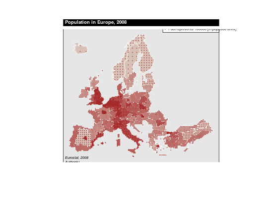

Plot a dot density layer.
dotDensityLayer(spdf, df, spdfid = NULL, dfid = NULL, var, n = NULL,
iter = 5, pch = 1, cex = 0.15, type = "random", col = "black",
legend.pos = "topright", legend.txt = NULL, legend.cex = 0.6,
legend.col = "black", legend.frame = TRUE, add = TRUE)
Arguments
- spdf
- SpatialPointsDataFrame or SpatialPolygonsDataFrame; if spdf
is a SpatialPolygonsDataFrame symbols are plotted on centroids.
- df
- a data frame that contains the values to plot. If df is missing
spdf@data is used instead.
- spdfid
- id field in spdf, default to the first column
of the spdf data frame. (optional)
- dfid
- id field in df, default to the first column of df. (optional)
- var
- name of the numeric field in df to plot.
- n
- one dot on the map represents n (in var units).
- iter
- number of iteration to try to locate sample points (see Details).
- pch
- symbol to use: points.
- cex
- size of the symbols
- type
- points allocation method: "random" or "regular" (see Details).
- col
- color of the points.
- legend.pos
- "topright", "left", "right", "bottomleft", "bottom", "bottomright". If
legend.pos is "n" then the legend is not plotted.
- legend.txt
- text in the legend.
- legend.cex
- size of the legend text.
- legend.col
- color of the text in the legend.
- legend.frame
- whether to add a frame to the legend (TRUE) or
not (FALSE).
- add
- whether to add the layer to an existing plot (TRUE) or
not (FALSE).
Details
The iter parameter is defined within the spsample function.
If an error occurred, increase this value.
The type parameters is defined within the spsample function.
See also
propSymbolsLayer
Examples
data("nuts2006")
# Example 1
plot(nuts0.spdf)
dotDensityLayer(spdf = nuts0.spdf, df=nuts0.df,var="pop2008")
plot(nuts1.spdf, col = "#B8704D50",border = "white", add=TRUE)
dotDensityLayer(spdf = nuts1.spdf, df=nuts1.df,var="pop2008",
type = "regular", pch=20, col = "brown",
n = 100000)
